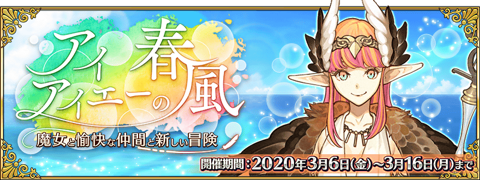
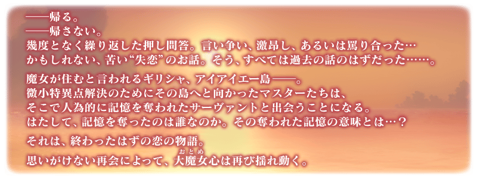
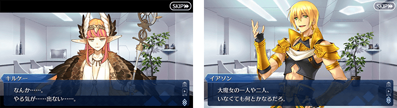
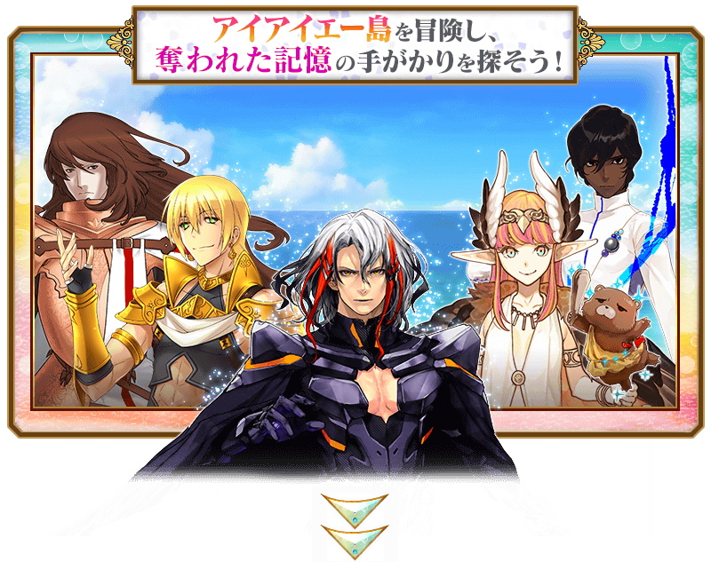
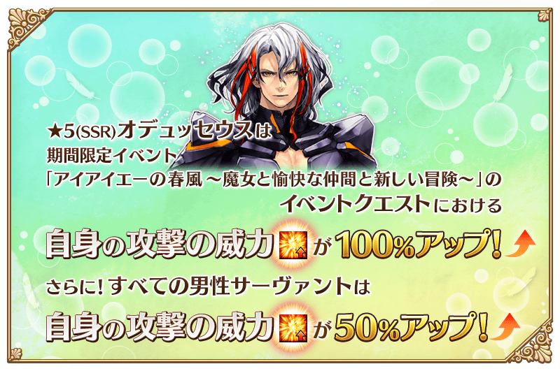
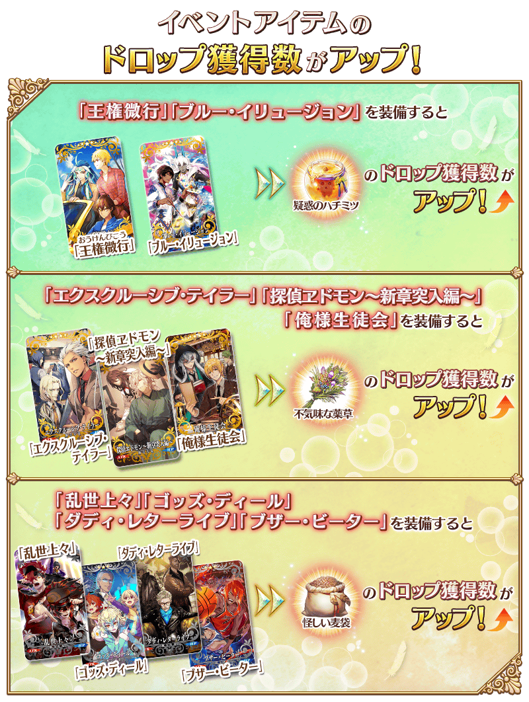
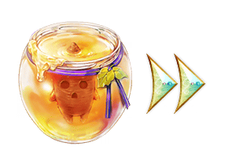
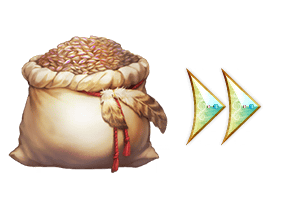

預定舉辦期間限定活動「艾尤的春風 ～魔女與愉快夥伴與嶄新冒險～」！
發生微小特異點的希臘艾尤島。在這個同時也是某位大魔女的故鄉所在之處，開始動搖少女心的冒險！
本活動中，活動關卡會在管理室(ターミナル)出現！
除了享受故事的主線關卡逐日開放以外，在第一節通過後會開放收集活動道具的自由關卡。
攻略活動關卡，觀看故事的結尾吧！
※本頁面皆為開發中圖片。會有與實際圖片相異的情況。 ※一部份的關卡為日後開放。
◆活動舉辦期間◆
2020年3月6日(五) 17:00～3月16日(一) 11:59
◆活動參加條件◆
滿足以下條件的御主才能參加
・通過「特異點F 炎上汙染都市 冬木」
◆有關從者真名的注意◆
在2018年12月31日(二) 23:00以後新配信的主線故事及期間限定活動、一部份關卡、宣傳活動及召喚中，會顯示隱藏真名的對象從者真名。
※2018年12月31日(一) 22:59前已經配信的主線故事、復刻活動、一部份關卡中不在此限。



享受故事的主線關卡會逐日開放。
通過主線關卡第一節的話會開放收集活動道具的自由關卡。
之後的自由關卡是藉由通過主線關卡來開放。
【關卡的舉辦期間】
| 關卡的種類 | 舉辦期間 |
|---|---|
| 序幕 主線關卡第一節 自由關卡 |
2020年3月6日(五) 17:00～ 3月16日(一) 11:59 |
| 主線關卡第二節 自由關卡 |
2020年3月7日(六) 17:00～ 3月16日(一) 11:59 |
| 主線關卡第三節 自由關卡 |
2020年3月8日(日) 17:00～ 3月16日(一) 11:59 |
| 主線關卡第四節 自由關卡 |
2020年3月9日(一) 17:00～ 3月16日(一) 11:59 |
| 主線關卡第五節 自由關卡 |
2020年3月10日(二) 17:00～ 3月16日(一) 11:59 |
| 主線關卡第六節 尾聲 自由關卡 |
2020年3月11日(三) 17:00～ 3月16日(一) 11:59 |
【3月11日(三) 17:00追記】
以通過期間限定活動「艾尤的春風 ～魔女與愉快夥伴與嶄新冒險～」尾聲及「終局特異點」的御主做為對象，開放高難易度的「挑戰關卡」。
「挑戰關卡」就算通過後也不會消失，能無數次挑戰，可以變更從者和概念禮裝的組合後再次挑戰。 ※關卡通過報酬、戰利品、御主EXP、魔術禮裝EXP、絆點數只可在初次通過時獲得。
◆挑戰關卡開放時間◆
2020年3月11日(三) 17:00～
◆挑戰關卡參加條件◆
滿足以下條件的御主才能參加
・通過期間限定活動「艾尤的春風 ～魔女與愉快夥伴與嶄新冒險～」的尾聲(エピローグ)
・通過「終局特異點」
◆挑戰關卡初次通過報酬◆
傳承結晶 1個
超值攻略方法・其1
做為初登場的從者「★5(SSR)奧德修斯」在期間限定活動「艾尤的春風 ～魔女與愉快夥伴與嶄新冒險～」的活動關卡中會得到自身的攻擊威力提升100%加成！
並且，「★5(SSR)奧德修斯」以外的所有男性從者在活動關卡中會得到自身的攻擊威力提升50%加成！

◆有關從者的注意◆
※性別「男性」的從者之外，下述的從者也包含在活動加成的對象。
・★5(SSR)阿斯托爾福(Saber)
・★5(SSR)俄里翁
・★5(SSR)恩奇杜
・★5(SSR)伽摩
・★5(SSR)始皇帝
・★5(SSR)魔王信長(織田信長)
・★4(SR)夏爾・德翁
・★4(SR)阿斯托爾福(Rider)
※自3月4日(三) 17:00，在從者選擇畫面和從者強化畫面等，追加活動加成篩選器。由於是只顯示活動中活躍從者的便利功能，敬請活用。
超值攻略方法・其2
裝備期間限定概念禮裝，讓活動道具的掉落獲得數提升！
裝備在期間限定「迦勒底男性精選2020 Pick Up召喚(每日交替)」Pick Up的期間限定概念禮裝「★5(SSR)王權微行」「★5(SSR)ブルー・イリュージョン」「★4(SR)エクスクルーシブ・テイラー」「★4(SR)探偵ヱドモン～新章突入編～」「★4(SR)俺様生徒会」「★3(R)乱世上々」「★3(R)ゴッズ・ディール」「★3(R)ダディ・レターライブ」「★3(R)ブザー・ビーター」的話，會提升活動道具「可疑蜂蜜」「詭異藥草」「奇妙麥袋」各自的掉落獲得數提升。
※請注意各關卡的道具掉落率並非100％。


活動道具可自點擊管理室(ターミナル)畫面右上「活動報酬」鍵所顯示的「活動道具交換」畫面，交換以下的道具。
※關於英靈結晶・流星之芙芙ALL★4(HP)、英靈結晶・日輪之芙芙ALL★4(ATK)，在通過本活動的主線關卡才能交換。 ※活動道具交換期間結束後「可疑蜂蜜」「詭異藥草」「奇妙麥袋」會消失。
◆交換期間◆
2020年3月6日(五) 17:00～3月23日(一) 11:59
◆能用可疑蜂蜜交換的道具◆
|  |
【技能強化＆靈基再臨素材】
【靈基再臨素材】
【其他道具】 |
◆能用詭異藥草交換的道具◆
|
【技能強化＆靈基再臨素材】
【靈基再臨素材】
【其他道具】 |
◆能用奇妙麥袋交換的道具◆
|  |
【技能強化＆靈基再臨素材】
【其他道具】 |
其他還有，可入手新從者「★5(SSR)奧德修斯」和附有活動加成期間限定概念禮裝的期間限定「迦勒底男性精選2020 Pick Up召喚(每日交替)」同時舉辦！
關於詳情，請自下述橫幅確認。